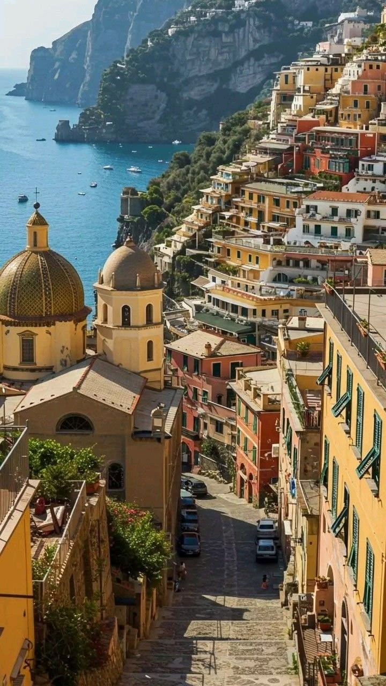
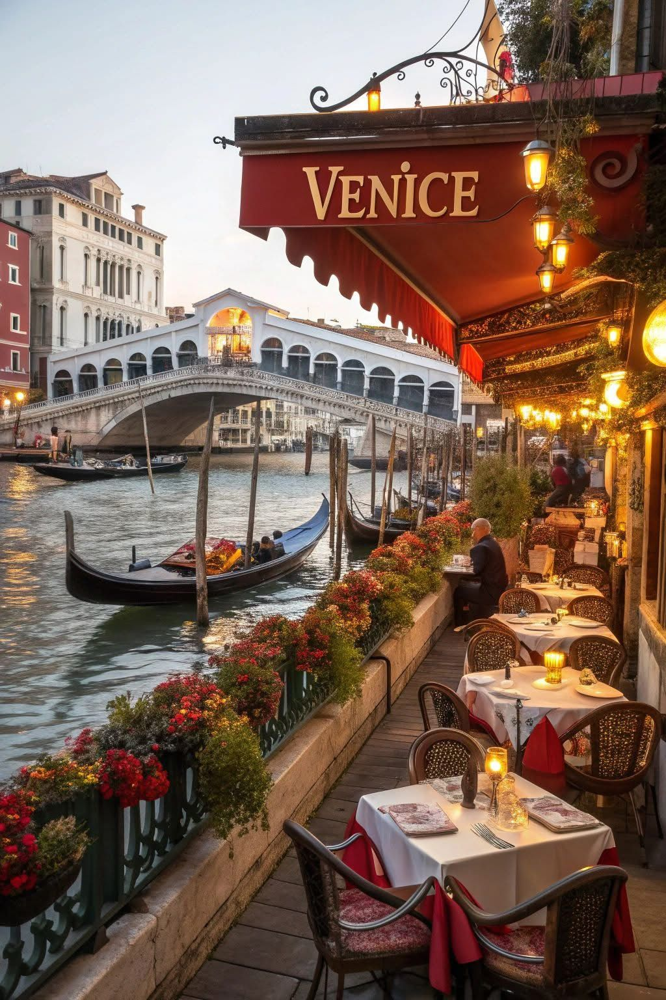

ITALY
A premier global destination, blending unparalleled, ancient history with vibrant, modern culture, renowned cuisine, and diverse, breathtaking scenery



About Italy
Italy is far more than just a destination on a map it is a sensory masterpiece that blends ancient history, art, and culinary excellence with breathtaking coastlines and romantic cities. From the storied ruins of Rome that whisper tales of emperors to Florence’s Renaissance masterpieces and Venice’s winding canals, every region offers a distinct character and charm. The country feels like a living museum where scenic drives along the Amalfi Coast, vineyard dotted hills in Tuscany, and vibrant piazzas invite slow exploration, while local traditions, festivals, and authentic flavors make each visit feel both memorable and warm.
Why I'm Drawn to Italy
The reason I am so drawn to Italy is my deep-seated desire to experience a culture that truly understands the "art of living." I want to go there to stand in the shadow of the Colosseum and feel the weight of centuries of history, and to walk through the Uffizi Gallery to see the brushstrokes of geniuses like Da Vinci and Botticelli with my own eyes. Beyond the landmarks, I am captivated by the concept of dolce far niente the sweetness of doing nothing. I want to sit in a sun drenched Sicilian square, sipping an espresso while watching the world go by, and learn the secrets of authentic pasta making from those who have passed down recipes for generations.
Why I Want to Visit Italy
I want to visit Italy because it offers a rare harmony between the grandeur of the past and the simple joys of the present. Whether it is navigating the turquoise waters of Capri or finding a quiet corner in a Tuscan village, I am looking for a journey that nourishes both the soul and the intellect. For me, Italy isn't just a place to see it is a place to feel, to taste, and to be inspired by a legacy of beauty that has shaped the entire world.